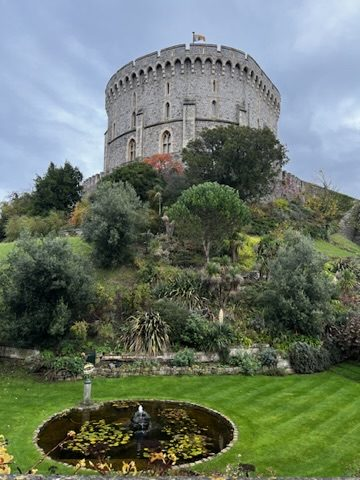
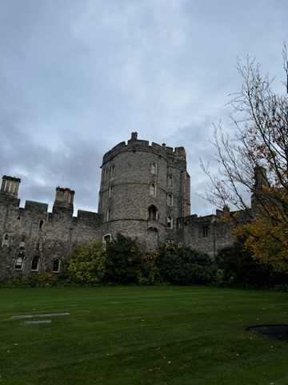
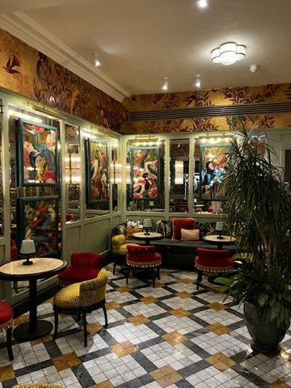

Windsor
Castle walls made this stop feel properly old-world.
Windsor had the kind of grey-sky charm that works well in photos: round towers, neat gardens, and interiors that leaned classic without feeling too polished.


